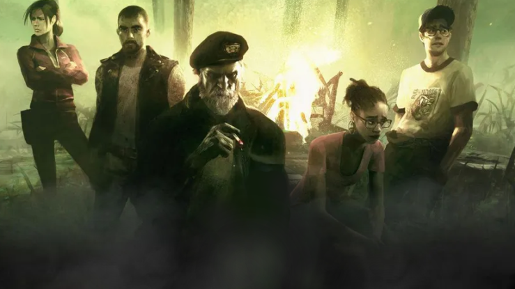
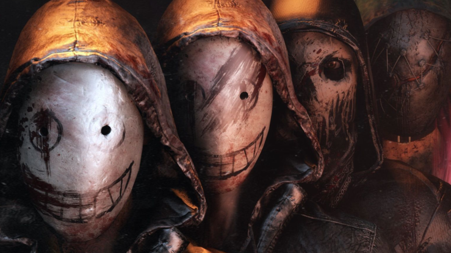

Disini penjelasan cara bermain DBD dari kedua perspektif:
Penyintas:

Sebagai penyintas, Anda bekerja sama dengan rekan satu tim untuk memperbaiki generator yang tersebar di seluruh peta sambil menghindari cengkeraman mematikan si pembunuh. Setelah cukup banyak generator yang diperbaiki, gerbang keluar dapat dibuka, yang memungkinkan para penyintas untuk melarikan diri.
Pemburu:

Sebagai pemburu, tujuan Anda adalah memburu dan menghabisi para penyintas sebelum mereka dapat melarikan diri, pemburu dapat menggunakan kemampuan unik untuk mengeliminasi para penyintas dan memudahkan si pemburu untuk mencapai kemenangan.